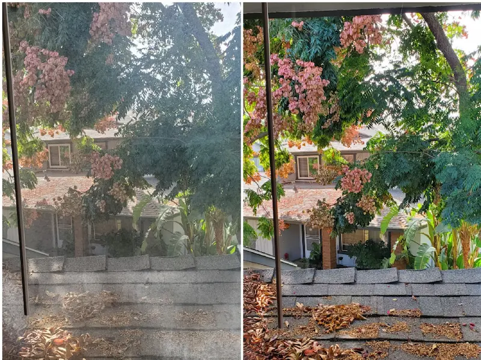
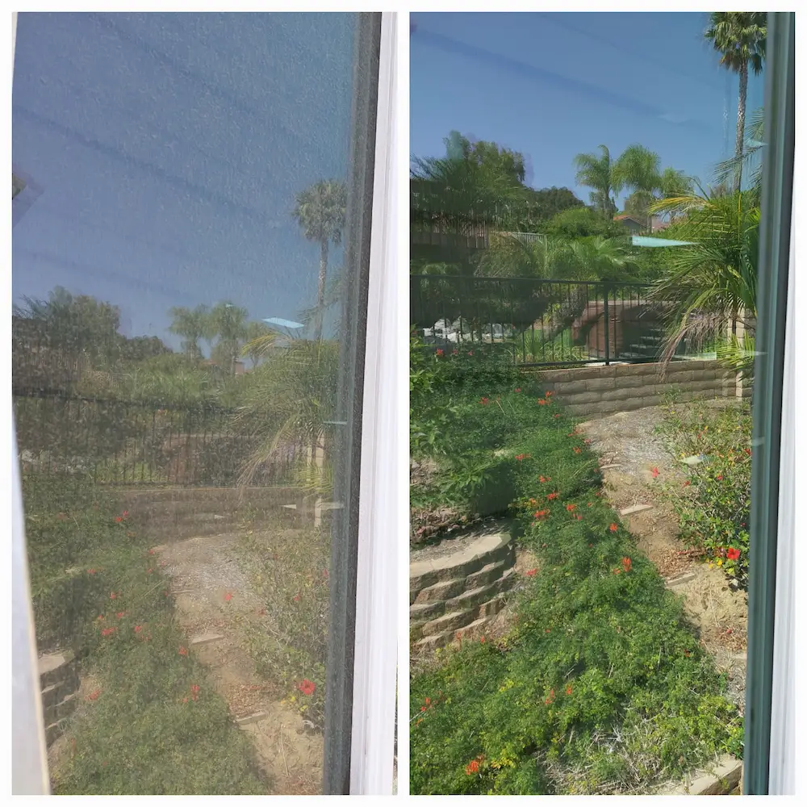
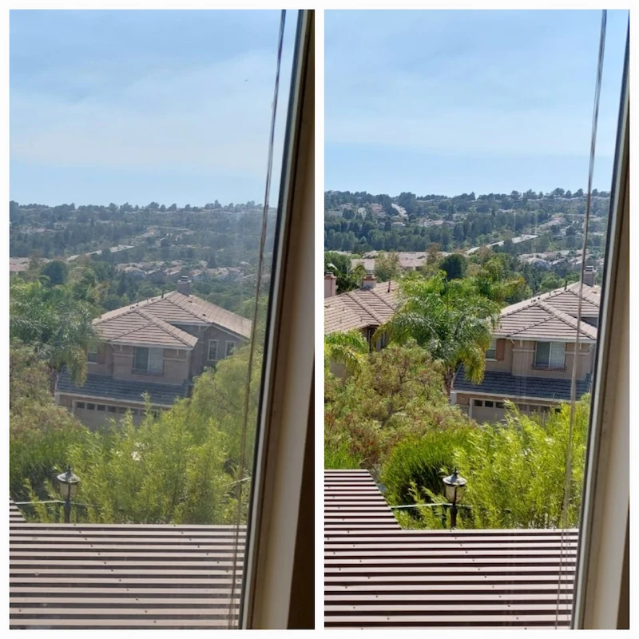
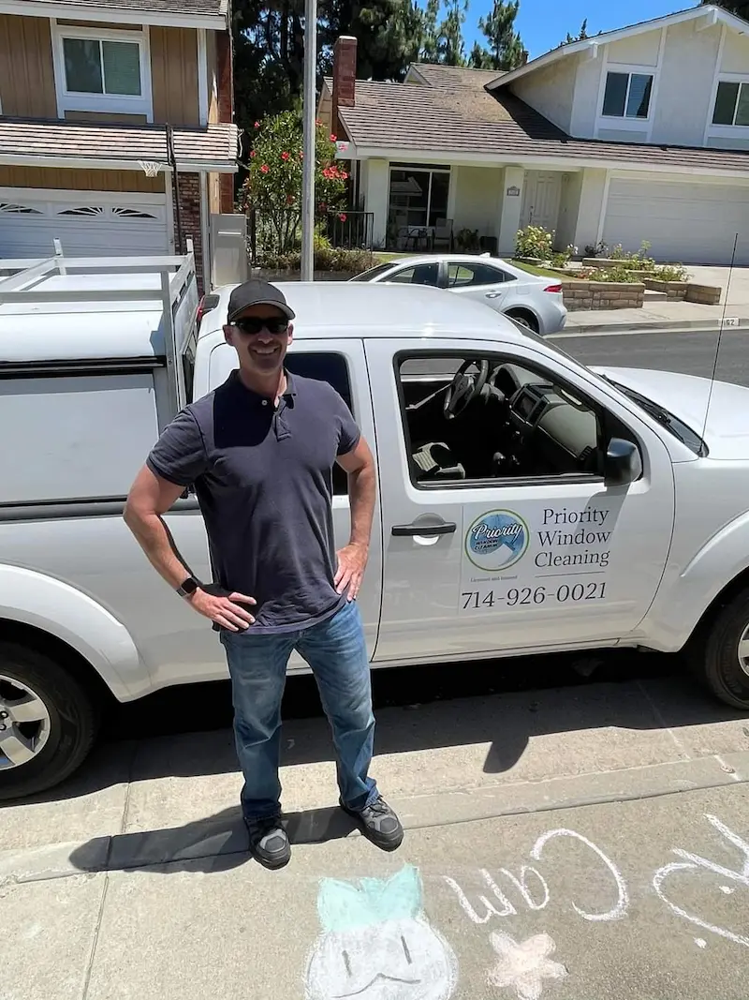
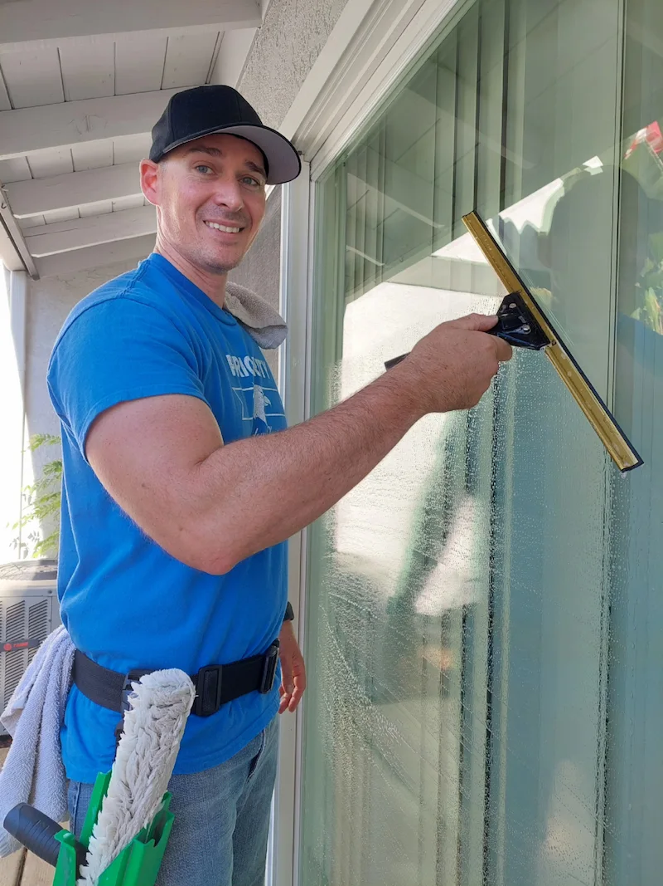
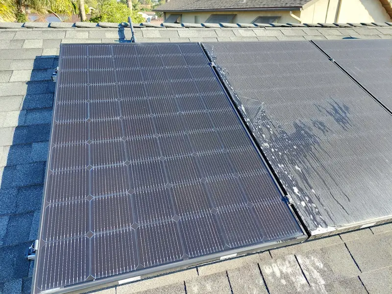

~See the world in all its color again~

~Fastest way to increase your home's curb appeal~

~Let the light shine through those windows again~

~Proud to serve our community~

~We love making yoy happy~

~Don't forget about your solar panels!~